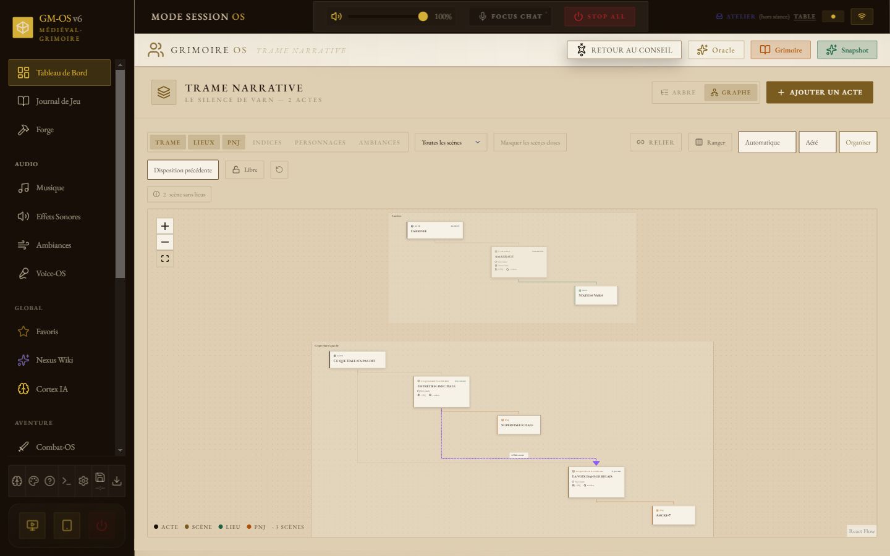
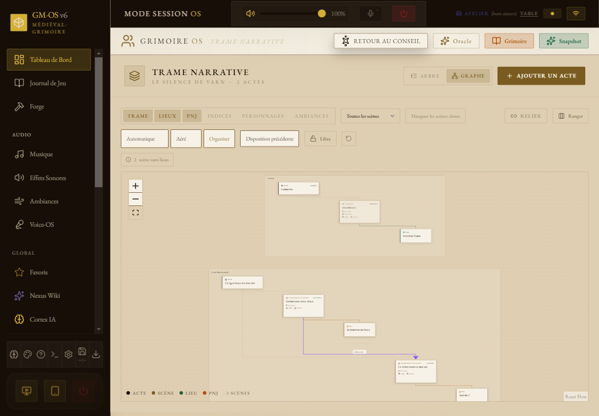
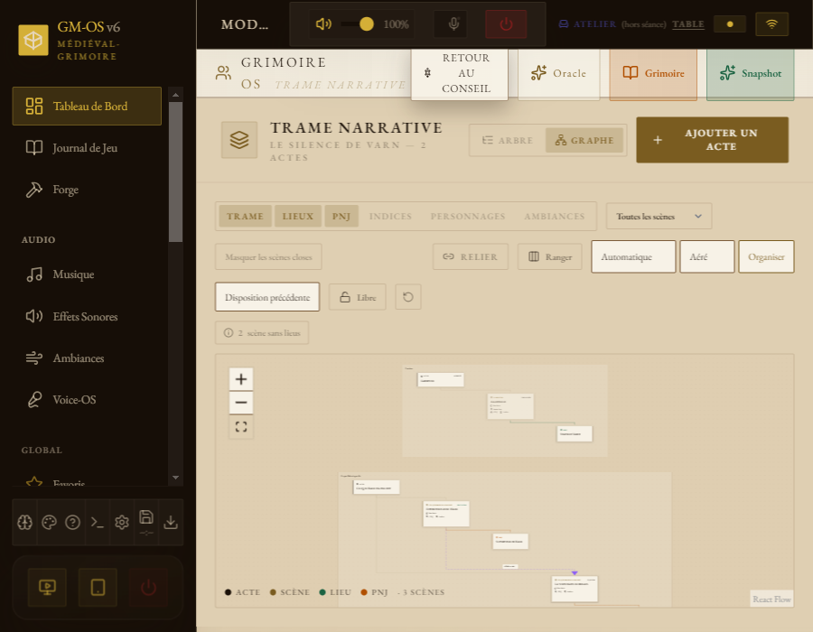
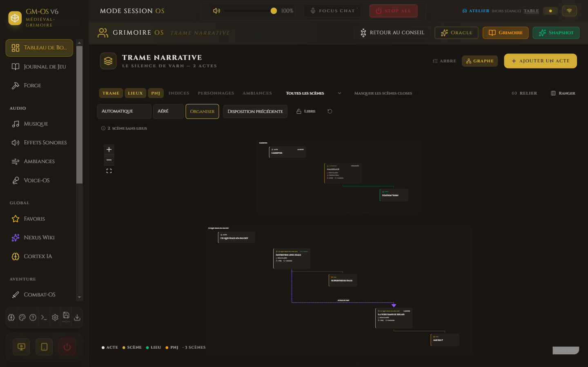
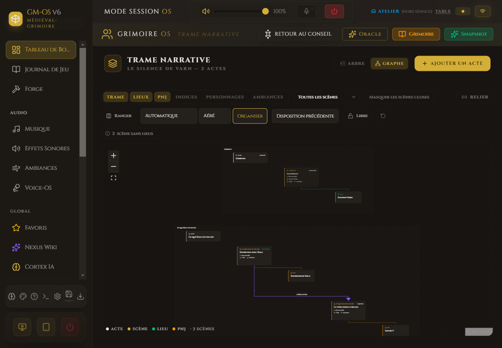
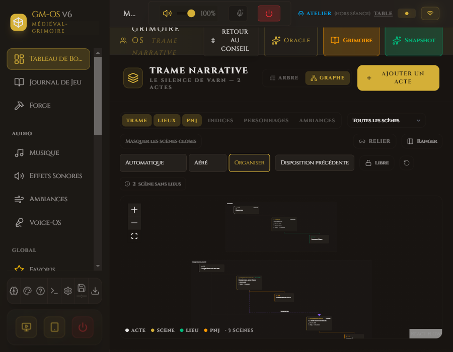

Organisation de Trame — medieval

medieval · personnalites · 1440 px

medieval · personnalites · 1180 px

medieval · personnalites · 900 px

medieval · base · 1440 px

medieval · base · 1180 px

medieval · base · 900 px